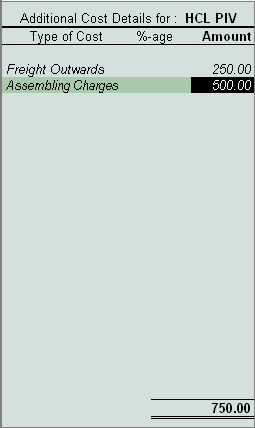

Additional Costs Incurred on Purchase
When you make a purchase, you may incur additional expenses like freight, handling charges, taxes and so on. This cost is also referred to as Landed Cost, Tally.ERP 9 allows you to add these costs to the value of the product during voucher entry or later. These expenses are sometimes included in the Supplier Invoice or directly borne by the buyer, in such cases you have to book these expenses in order to ascertain the landed cost of the product and ultimately which will help in determining the Item pricing and your margin. In Tally.ERP 9, you may book additional cost incurred on purchases in two ways:
Method 1:
Step 1: Enable Additional Cost of Purchase
To enable Additional Cost of Purchase, Go to Gateway of Tally > F11: Inventory Features
# Set Track additional cost of purchase to Yes
Step 2: Book Additional Cost of Purchase
To enter Additional Cost of Purchase, Go to Gateway of Tally > Accounting Vouchers > F9 (Purchase - As Voucher)
# Select an item
# specify Qty & Rate details and press Enter
Tally.ERP 9 prompts for Additional Cost Details for screen for the Stock Items

# Select Expenses ledgers like Freight, Packing and enter their rates
# Save the voucher
Method 2:
At times, it may happen that you have completed the purchases entry and want to book additional costs later. In such cases, follow the steps given below :
Go to Gateway of Tally > Accounts Info. > Ledgers > Create
# In the Ledger Master creation screen, set Inventory values are affected to Yes
To book Additional Cost of Purchase
Go to Gateway of Tally > Accounting Vouchers > F5 (Payment)
# Select additional costs Ledger Account (e.g. Customs Duty, Taxes, Freight etc)
# Select the required Stock Item
# Enter value for Amount in Item Allocations screen
# Select other stock items and follow the same process
The above process automatically updates the value of the stock item.
To view Report,
If you wish to view the additional cost details for stock items for purchases
Go to Gateway of Tally > Display > Inventory Books > Movement Analysis > Stock Item Analysis
# Select Stock Item from List of Items, Tally.ERP 9 displays details of item purchased
# Press Enter to drill down to get information on Qty, Basic Rate & Value, Additional cost, total value and effective rate etc.